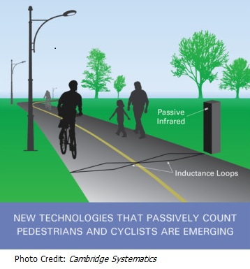

Active Transportation Forecasting: The Critical Need for Activity-Based Modeling Tools
Mass Transit Tom Rossi May 2, 2017

Considering Americas great love of the automobile, it's no surprise that the U.S. Surgeon General has issued a nationwide call to action promoting walking and walkable communities. Despite the proven health benefits of an active lifestyle, Americans rely on their personal vehicles for 83 percent of their daily trips while only 10 percent of their travel is by foot and one percent by bicycle. These figures could be higher if there were greater infrastructure to support active transportation a fact noted in a 2014 American Community Survey Report on non-motorized commuting. Infrastructure that supports bicycling and walking expands transportation options and may complement other forms of transportation by supplementing segments of trips, the report states.
An increasing number of state and urban governments have published goals to boost active transportation in their regions, per a 2016 study by the Alliance for Biking and Walking. To estimate the impact of active transportation growth strategies, it is essential for travel planners to gauge travel preferences and sensitivities of individuals in precise geographic zones. They then can determine infrastructure investments that should spur and support more Americans to transition from cars.
Legacy planning tools have been car-centric and based on what, for the most part, have been coarsely aggregated data. Yet, the increasing popularity of granular planning tools such as activity-based demand models is helping planners hone in on creating an infrastructure for a healthier lifestyle while meeting the real-world needs of the communities they serve.
Data Authenticity
When it comes to data integrity, a model's output is only as valid as its input. The need for reality-based data in transportation demand forecasting is essential. To gather the real-world travel habits and preferences of drivers, household surveys are an established, efficient means of reaching the auto-dominated U.S. population. As for public transit users, riders can be intercepted en route and surveyed on their travel patterns, routes, trip purpose and other relevant information. Data collection from active travelers, however, is less readily accomplished. Most models depend on trip purposes and traveler characteristics, such as age, gender, household structure, income level, and vehicle availability. But, active transport modeling must also consider infrastructure sensitivities, urban form, and fine-grained temporal and spatial constraints. Surveying a statistically accurate number of walkers and cyclists scattered across geographic regions is highly challenging.
As more planning agencies recognize the environmental and health benefits of active transportation, household transportation surveys increasingly include questions aimed at current and prospective active travelers. Additionally, new technologies which passively count pedestrians and cyclists, such as cell phone traces, are emerging.
Outmoded Legacy Tools
In use for more than 50 years, legacy travel demand modeling tools were initially designed for automobiles and, to a lesser extent, public transportation. Trip-based, these systems rely upon aggregated data to estimate travel behavior patterns for large market segments. This approach, while still workable for some applications of roadway and public transit modeling, obscures the characteristics of individual active travelers in specific geographic zones critical information for transportation modeling. Fortunately, a modern forecasting approach centered on activities of individuals has been gaining in popularity over the past decade, particularly in large urban areas.
Emergence of Activity-Based Transportation Demand Modeling
Known as activity-based transportation demand modeling, this individual-centric modeling method is founded on the principle that travel demand is derived from the activities people want to do or have to do. Activity-based modeling considers the complete schedule of activities individuals perform throughout the day along with the time and space constraints faced by travelers and the interactions and dependencies among household members. In this advancement from traditionally designed models, planners can drill down to the daily activity patterns of individuals and their identifying characteristics.
Activity-based models use a synthetic population instead of the usual reliance on aggregated data. Accordingly, the system estimates the activities individuals want to or are compelled to perform along with the location, mode, and timing choices, with much finer spatial and temporal resolution.
In activity-based models, planners can add more spatial detail critical to understanding the characteristics of shorter walking and bicycling trips. Additionally, a disaggregate approach based on a synthetic population enables planners to consider the characteristics that influence an individuals choice of an active travel mode.
Although activity-based models are more complex than legacy tools, robust open source software frameworks exist to help planners implement the models in a practical way. These frameworks include tools developed by professional software engineers in close cooperation with activity-based modeling experts.
More Realistic Planning for Wiser Investments
As transportation planners know, improved facilities such as protected bike lanes and safer crosswalks will help persuade more Americans to leave their cars at home. An activity-based model can be an integral tool in determining the impacts of strategies and investments designed to increase walking and bicycling.
Tom Rossi is senior associate and travel demand modeler with Cambridge Systematics Inc.
----------------------------------------------------------------------------------
Source: http://www.masstransitmag.com/article/12318220/active-transportation-forecasting-the-critical-need-for-activity-based-modeling-tools
In accordance with Title 17 U.S.C. Section 107, this material is distributed without profit to those who have expressed a prior interest in receiving the included information for research or educational purposes.